Inleiding
De installatie en het gebruik van de koppeling wordt je kosteloos aangeboden door MyParcel. Wij helpen je graag met vragen over het gebruik van de plug-in. Omdat OpenCart een opensource platform is kan het zijn dat de MyParcel plug-in conflicteert met reeds geïnstalleerde plug-ins. Mocht je problemen ondervinden met de installatie, raden wij je aan contact op te nemen met jouw webbouwer.
Plugins van derden die we ondersteunen
1. Installatie
Dit hoofdstuk omschrijft de installatie van de MyParcel OpenCart plug-in met gebruik van de “Extension installer”. Wij adviseren de installatie altijd eerst op een testomgeving uit te voeren en een back-up te maken van jouw webshop voor je begint. Download het MyParcel OpenCart Plug-in.zip bestand, zie link bovenaan de pagina.
1.1 Nieuwe installatie Via het CMS
Ga naar Extensions > Installer en installeer “myparcel.zip” d.m.v. de OpenCart “Extension installer”.
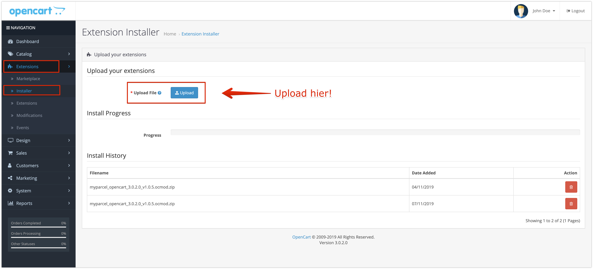Wanneer je de MyParcel plugin hebt geüpload ga je naar ‘Modifications’ > Klik hier op de checkbox voor ‘MyParcel NL’ en ‘MyParcel NL - Default Checkout’, Wanneer je de selectie hebt gemaakt klik dan op de refresh knop rechtsboven (zie screenshot hier beneden bij nummer 4).
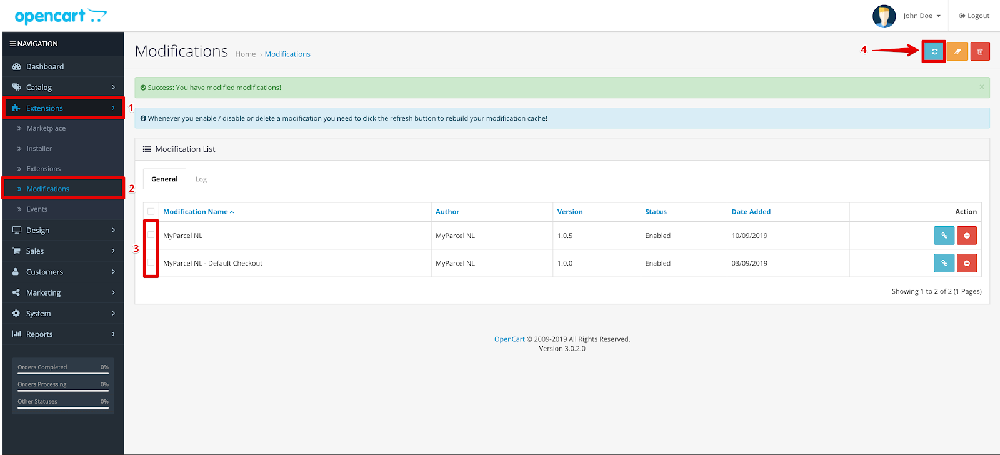1.2 Updaten bestaande installatie
Beschrijf hier hoe een plugin kan worden geüpdatet.
1.3 Veelgestelde vragen over de installatie
Zet hier de veel gestelde vragen omtrent de installatie
2. Configuratie
Ga in het OpenCart menu naar Extensions → Extensions →Shipping > MyParcel Shipping → Edit en Enable de plugin.
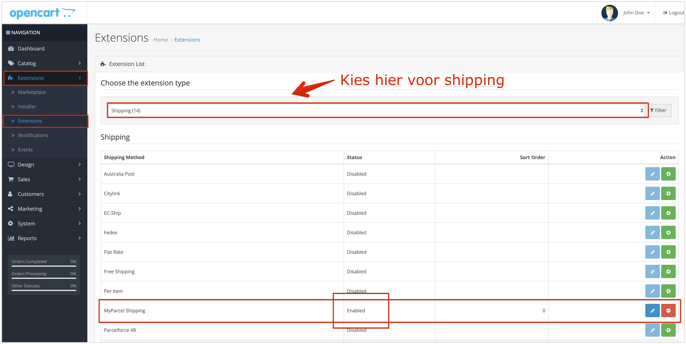2.1 Algemeen/General
Ga links in het menu naar System > MyParcel > General om de plugin te bewerken.
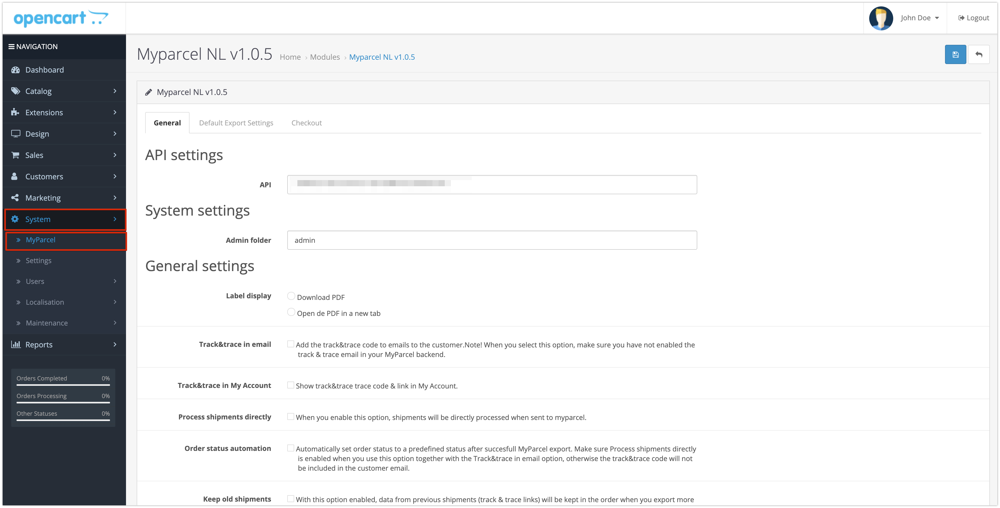API instellingen
Om verbinding te kunnen maken met jouw MyParcel account is het noodzakelijk om hier jouw API-key in te vullen.
Als je ingelogd bent in jouw MyParcel account dan is deze te vinden in menu  Shopinstellingen → Algemeen.
Shopinstellingen → Algemeen.
Label weergave
Geef hier aan of je het label direct wilt downloaden of wilt openen in een nieuw scherm.
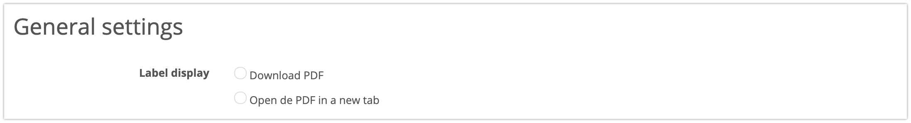Track&Trace instellingen
Stel ’Email track&trace code’ in zodat het emailadres van de klant wordt meegestuurd naar MyParcel. Het emailadres kan door MyParcel worden gebruikt om de Track&Trace mail te versturen naar de klant vanuit het MyParcel account.
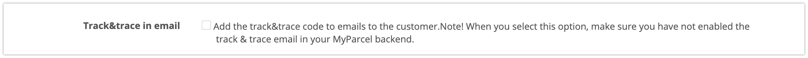Track & Trace in mijn account
Toon track&trace trace code & link in het account van de klant als deze aangemaakt kan worden in de webshop.
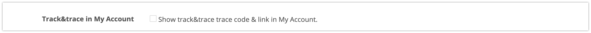Verwerk zendingen direct
Wanneer je deze optie inschakelt, zullen zendingen direct worden verwerkt wanneer deze verzonden zijn naar MyParcel.
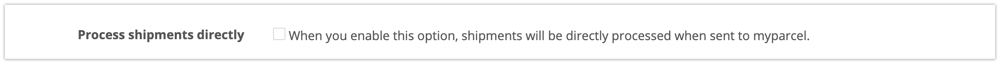Orderstatus automatisering
Wijzig automatisch de order status na het succesvol exporteren van een order naar MyParcel. Ons advies is om deze op afgerond te zetten aangezien de order dan ook klaar is voor verzending.
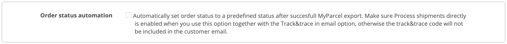Bewaar informatie van oude zendingen
Wanneer deze optie is ingeschakeld, zullen de gegevens van de vorige zendingen (track&trace links) in de order worden bewaard wanneer je meer dan één keer exporteert.
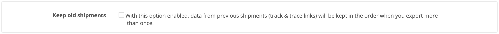Use addition address
Bij ‘Use addition address as number suffix’ kan je instellen wat er gebeurt met de adresvelden bij de checkout. Bij optie één zullen de adresvelden samengevoegd worden in één lijn. Met optie twee zal adres veld 2 als toevoeging worden gezien en bij optie drie zal adres veld 3 als toevoeging worden gezien.
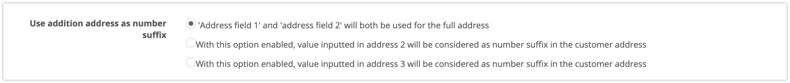Diagnostische hulpmiddelen
Je kunt de diagnostische hulpmiddelen inschakelen op het moment dat er problemen zijn met het exporteren van de zendingen. In dit bestand wordt de communicatie tussen OpenCart en MyParcel beschreven.
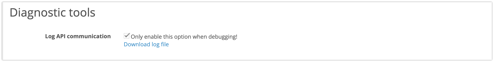2.2 Standaard exportinstellingen
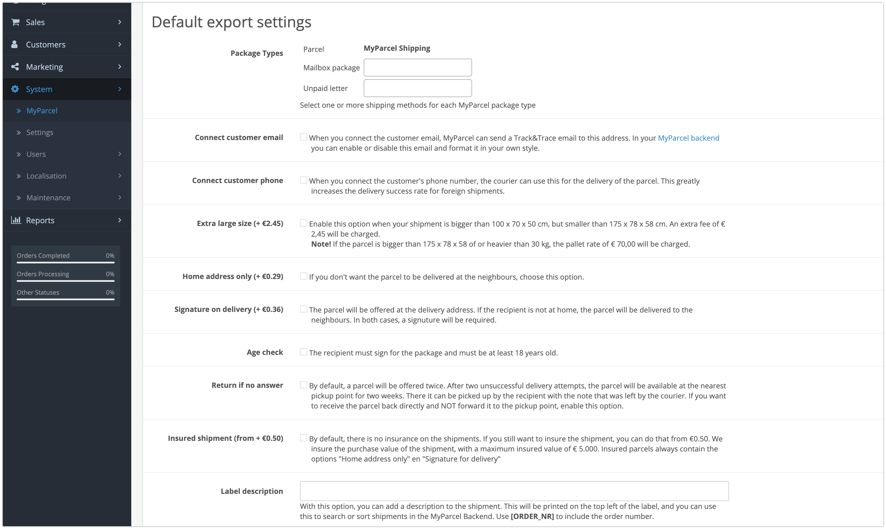Pakkettype koppelen aan verzendkosten
Je kunt verzendmethoden koppelen aan een pakkettype, zodat het juiste label wordt aangemaakt in jouw MyParcel account.
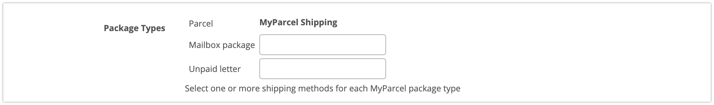In het voorbeeld is er te zien dat de verzendmethode MyParcel Shipping is gekoppeld aan Parcel. Daarnaast is het mogelijk om jouw overige verzendmethoden te koppelen aan andere pakkettypes.
Koppel emailadres klant
Je kunt de keuze maken om wel of niet het e-mailadres vanuit jouw orders mee te sturen naar MyParcel. Wanneer je het emailadres van de klant koppelt, kan je instellen dat MyParcel jouw Track&Trace emails verstuurd naar dit adres. In jouw MyParcel account kun je zelf deze email in of uitschakelen en opmaken in jouw eigen stijl.

Koppel telefoonnummer klant
Is hetzelfde als met het email adres alleen dan met het telefoonnummer. Deze komt niet op het label maar de bezorger zou dit nummer wel kunnen gebruiken om de ontvanger op de hoogte te houden, vooral bij zendingen buiten Nederland.
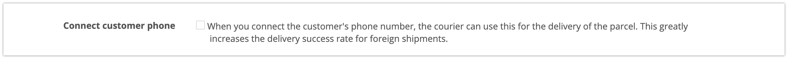Extra verzendopties
Geef direct aan wat jouw standaard verzendopties zijn voor jouw Nederlandse pakketzendingen. Je kunt hier kiezen voor extra groot formaat, alleen huisadres, handtekening voor ontvangst, leeftijdscheck, retour bij geen gehoor en verzekerd verzenden. Jouw zendingen krijgen hiermee standaard de verzendoptie mee wanneer je deze exporteert. De opties die je hier aangeeft kan bij het exporteren altijd nog per zending aangepast worden.
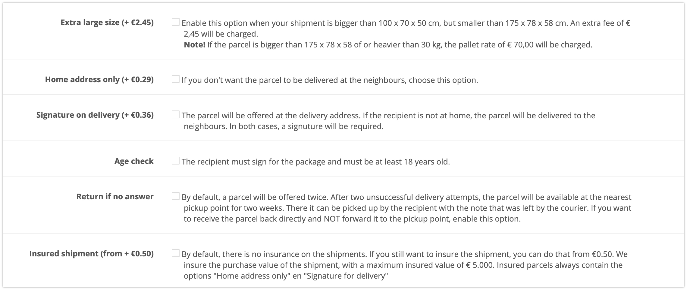Label omschrijving
Met deze optie kun je een beschrijving toevoegen aan de zending. Dit zal worden afgedrukt op de linkerbovenhoek van het label en kun je gebruiken om de zending in het MyParcel zendingenoverzicht op te zoeken. Gebruik [ORDER_NR] om het ordernummer te vermelden.
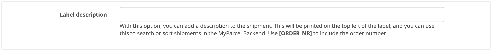2.3 Checkout instellingen
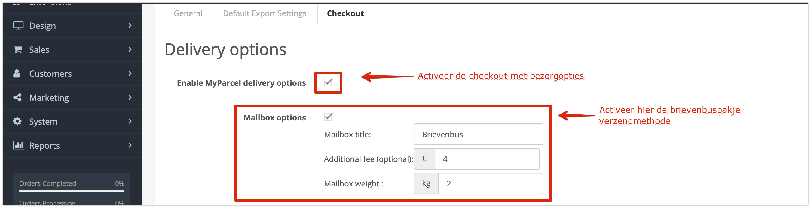 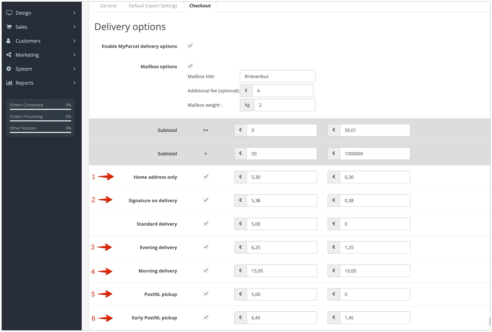Via het tabblad ‘Checkout’ heb je de mogelijkheid om meer verzendopties toe te voegen in jouw checkout. Deze opties zullen alleen getoond worden in de checkout bij de verzendmethoden gekoppeld aan een pakket. Hier kun jij jouw klanten de mogelijkheid geven om zelf te kiezen voor:
- Alleen huisadres
- Handtekening voor ontvangst
- Avondlevering
- Ochtendlevering
- Ophalen op een PostNL locatie
- Extra vroeg ophalen op een PostNL locatie
Ook activeer je hier de instellingen/ verzendmethodes voor het Brievenbuspakje en zendingen naar België.
Bezorgopties
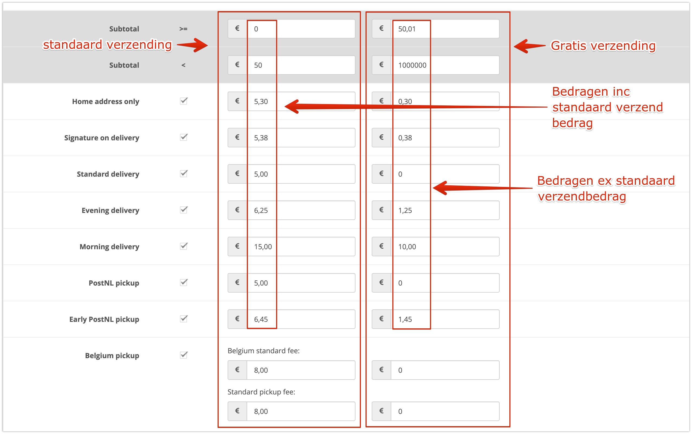Bij standard delivery geef je het standaard verzendbedrag aan wat jij wil berekenen aan jouw klant.
Bij subtotaal geef je aan tussen welk bedrag er een betaalde verzending of gratis verzending moet plaatsvinden.

In de linkerkolom geef je het standaard verzendbedrag aan plus de extra kosten voor de bezorgopties.
In de rechterkolom geef je gratis verzending aan, dit is exclusief het standaard verzendbedrag en alleen de kosten voor de bezorgopties.
Bij de verschillende bezorgopties is het mogelijk een toeslag in te stellen die voor de desbetreffende bezorgoptie doorberekend wordt aan jouw klant via de checkout. Het is dus een toeslag op de standaardtarieven die je al hebt ingevoerd. In onderstaand voorbeeld zie je hoe deze toeslagen in de check-out terugkomen.
!!!! Hier nog een screenshot van checkout met toeslagen frontend !!!
Je ziet bij de checkout instellingen nog 4 andere instellingen. Dit zijn Dropoff days, Cut-off time, Dropoff delay en Delivery days window. Op basis van deze instelling worden de juiste levertijden en –dagen getoond aan jouw klanten via de checkout, gebaseerd op jouw manier van orderverwerking.
Verwerking van zendingen
Dropoff Days
Hiermee kun je aangeven op welke dagen jij het pakket afgeeft bij een PostNL locatie. Jouw klanten krijgen hiermee de juiste beschikbare bezorgdagen aangeboden.
Cutoff time
Met de sluitingstijd kun je aangeven tot welk moment van de dag de orders nog verwerkt kunnen worden. Als je elke dag rond 17:00 de bestellingen naar een PostNL locatie brengt is het handig om de laatste order rond 16:00 te verwerken. Wanneer jouw klanten na dit tijdstip een bestelling plaatsen zien zij een latere levermogelijkheid. Bijvoorbeeld: Sluitingstijd is om 16:00 en je kunt dezelfde dag de orders verwerken en op tijd inleveren. Dan zal jouw klant als eerste levermogelijkheid voor 16:00 de volgende dag zien. Wanneer jouw klant na 16:00 besteld zal het de dag erna zijn.
Dropoff delay
Je kunt hier instellen hoeveel dagen jij nodig hebt om een order, die vóór jouw laatste besteltijd binnenkomt, te verwerken. Als je bijvoorbeeld 1 dag invult, zal er in de weergave in de check-out altijd rekening gehouden worden met het feit dat jij de pakketten dus niet morgen geleverd worden. Bijvoorbeeld: De bestelling wordt geplaatst op 16 september voordat jij naar het PostNL punt gaat. Je hebt echter een verwerkingstijd van 1 dag ingesteld, dus de eerste mogelijkheid voor jou om het pakket in te leveren is dan 17 september. Jouw klant krijgt dan dus pas 18 september als eerst mogelijke leverdag te zien.
Delivery days window
Met deze optie kun je aangeven tot hoever in de toekomst jouw klanten een leverdag kunnen kiezen. In dit geval staat het op 10 dagen, maar dit kan natuurlijk ook 2 of 5 dagen zijn. Het maximum is 14 dagen. Wanneer het lever dagen venster op '0' wordt gezet, zullen de dagen niet meer worden getoond, waardoor de consument geen dag meer kan kiezen.
Let op: PostNL houdt geen rekening met de gekozen leverdag van jouw klant. Je dient zelf zorg te dragen voor het op de juiste dag inleveren van het pakket.
Checkout styling aanpassen
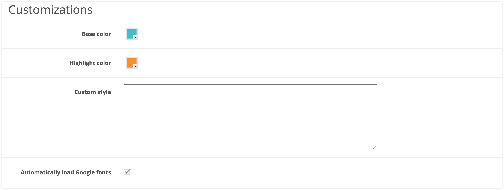
Met de optie checkout styling aanpassen kun je de MyParcel checkout nog naar wens aanpassen.
Verander de basis en highlight kleur, pas hier eventueel ook nog wat eigen CSS toe.
2.4 Veelgestelde vragen over de configuratie
Zet hier de veel gestelde vragen omtrent de configuratie.
3. Gebruik plugin
In het orderoverzicht kun je eenvoudig zien wat voor zending de nieuwe bestelling betreft. Ook kun je makkelijk het pakkettype wijzigen indien dit gewenst is.
3.1 Aanmaken van één verzendlabel
Beschrijf hier hoe je een verzendlabel aanmaakt.
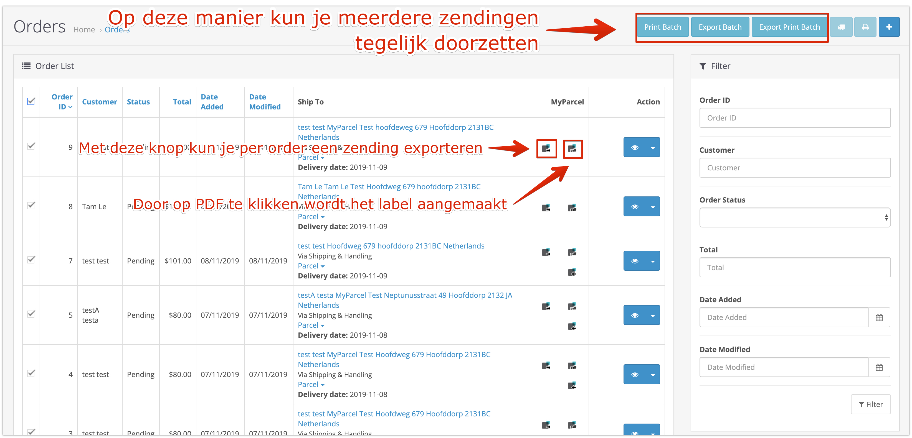3.2 Aanmaken meerdere verzendlabels
Beschrijf hier hoe je meerdere verzendlabels aanmaakt.
3.3 Aanpassen van een enkele zending
Wanneer je op Parcel klikt verschijnt het venster eronder. Hierin is het mogelijk om verzendopties uit te schakelen of juist toe te voegen of het soort zending aan te passen.
Na het kiezen van jouw gewenste opties of het wijzigen van het Soort zending klik je op Opslaan en daarna kun je deze keuze exporteren naar MyParcel en het gewenste label aanmaken.
3.4 Checkout
!!!LEEG!!!
3.5 Retourlabel aanmaken/mailen
Vanuit het orderoverzicht kun je een retourlink naar jouw klant sturen. Jouw klant ontvangt een e-mail met een link erin om eenvoudig een retourlabel te printen. In onderstaande afbeelding kun je zien welk icoontje hiervoor gebruikt kan worden.
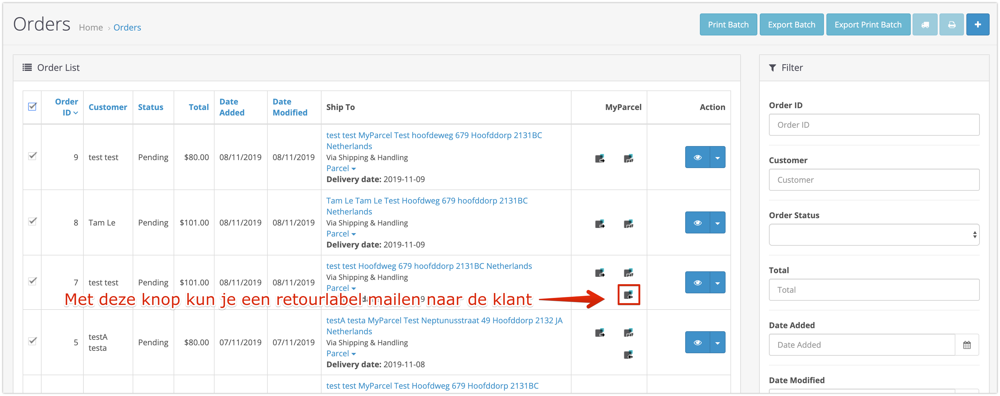3.6 Orderdetails
Uiteraard is het ook mogelijk om zendingen vanuit de order detailpagina zendingen aan te maken. Door op een view te klikken kom je op een pagina waar meer details over deze bestelling te vinden is.
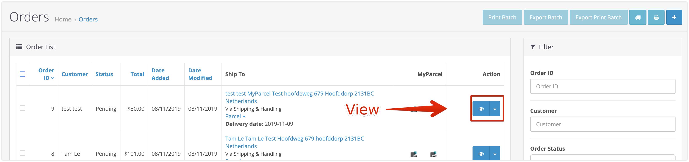 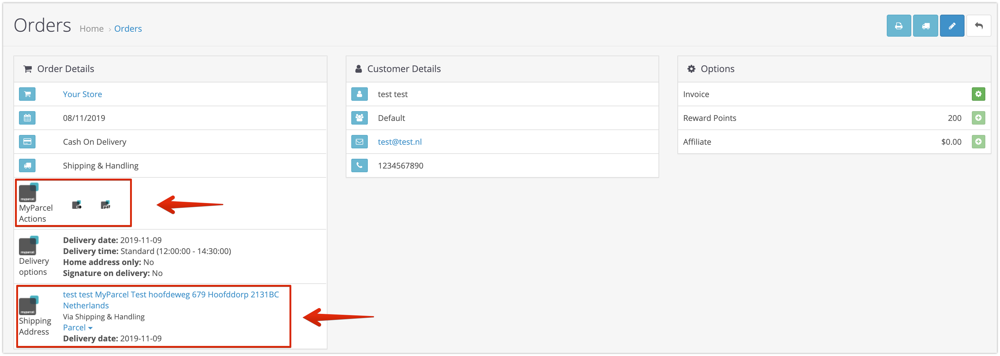3.7 Veelgestelde vragen over het gebruik van de plugin
Zet hier de veel gestelde vragen omtrent het gebruik van de plugin.